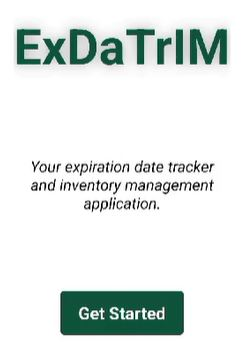
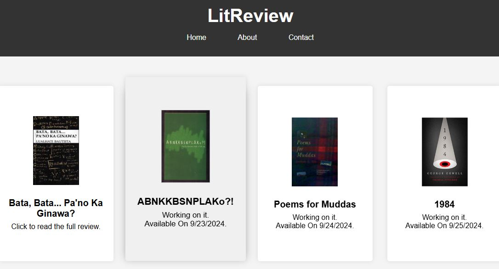
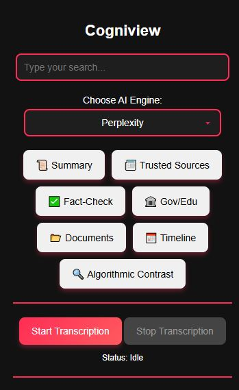

Projects & Experiences
-
ExDaTriM (2024) Completed
Expiration Date Tracker and Inventory Management Application for Sari-Sari Stores.
View on GitHub
A mobile app designed to help small business owners efficiently track inventory and monitor product expiration dates, reducing waste and improving store management. Built with React Native and JavaScript for cross-platform deployment. -
LitReview (2023) Completed
Interactive Literature Review Platform for Students and Readers.
View on GitHub
A web application created as a school project, allowing users to submit and browse reviews on various literary works. Designed to foster a collaborative environment for sharing insights and recommendations on literature. -
CogniView Completed
AI-Assisted Chrome Extension for Fact-Checking and Information Gathering.
View on GitHub
An innovative browser extension that leverages AI to help users gather reliable information and fact-check content, aiming to reduce the impact of algorithmic bias and misinformation online. -
AquaGuard In Progress

Smart Aquaculture Companion Application.
View on GitHub
A companion app for a water quality monitoring, automated feeding, and ultrasonic algae cleaning system. Designed to help aquaculture practitioners maintain optimal conditions and automate routine tasks for healthier aquatic environments.